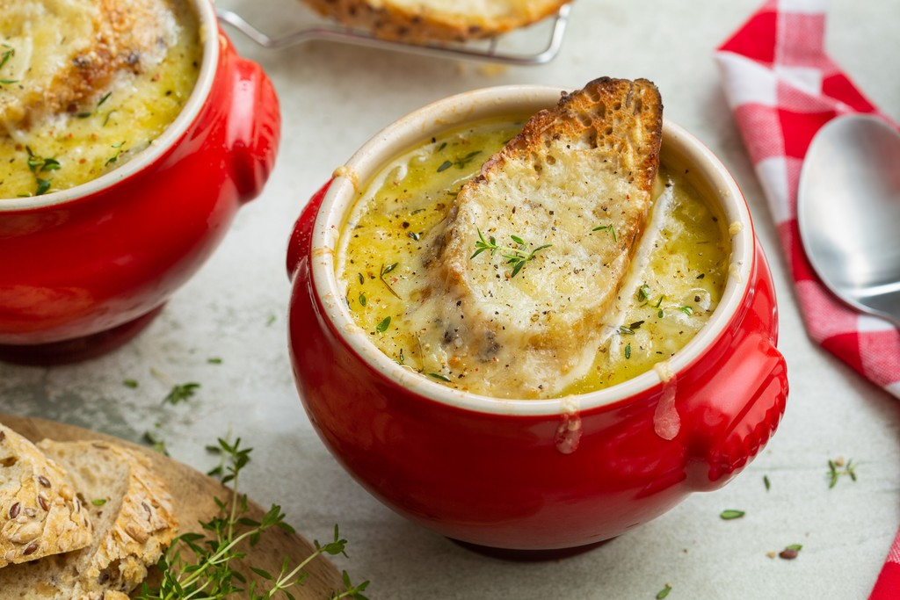

uiensoep
dit is het recept van uiensoep deze soep gaat goed samen met gehaktbrood. Ik zou deze soep serveren voor dat je gehaktbrood gaat eten
ingredienten
- 150 g uien
- 7,5 g roomboter
- 1 takjes verse tijm
- zout en peper
- 0,625 dl witte wijn
- 0,25 stokbrood
- 50 g gruyere
- 0,375 l runderbouillon
bereidingswijze
- Pel en snijd de uien in ringen
- Verhit de boter in een hoge pan en bak de uien met de tijmblaadjes, zout en peper op laag vuur in circa 10 minuten lichtbruin en mooi zacht
- Voeg de wijn toe en laat wat inkoken
- Verwarm de ovengrill, snijd het stokbrood in plakken en rooster in de oven om en om lichtbruin
- Voeg de bouillon toe aan de uien en laat de soep nog een kwartier zachtjes koken. Breng op smaak met zout en peper
- Rasp de Gruyère. Strooi over het brood en laat onder de grill gratineren en leg het gegratineerde brood in de soep. Of: schep de soep in hittebestendige kommen leg het brood met de kaas erin en laat dan onder de grill gratineren

goed bijpassende recepten
bananasplit
gehaktbrood